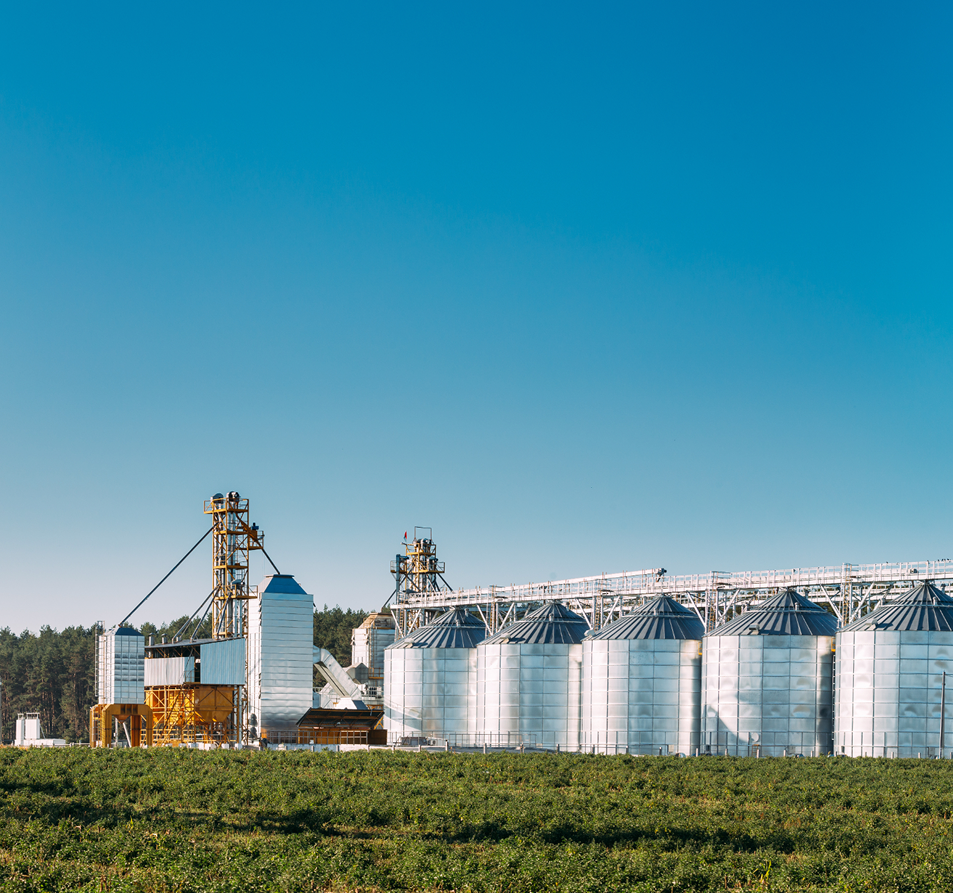
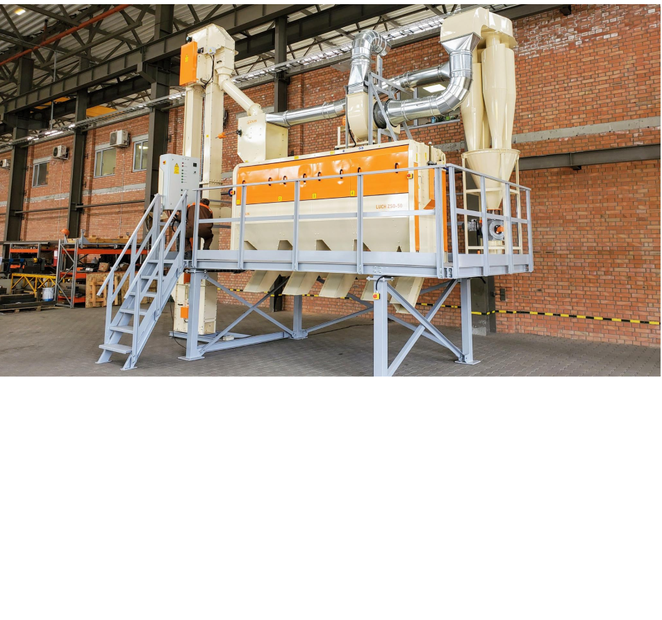

Главная / Комплексные решения
Комплексные решения

Наша страна давно заслужила славу "хлебной корзины". В бывшие республики Советского Союза
Украина поставляла свыше 25 процентов всей производимой сельскохозяйственной продукции.
Сегодня Украина - один из мировых лидеров по экспорту зерновых и продуктов их переработки.
Однако, в нашей стране умеют не только выращивать и перерабатывать зерно. В Украине есть
достаточно мощный потенциал по созданию зерноперерабатывающих технологий и оборудования
в разных направлениях очистки зерна, производства муки, крупы, а также оценки качества.
Объекты переработки зерна – это сложные и дорогостоящие инженерные сооружения. Там
среди глыб бетона, металлоконструкций и паутины проводов всегда находится что-то более
важное, то что все это делает эффективным или бесполезным. Ведь только технология
– настоящий венец любого производства. И прежде чем строить бизнес-планы, а тем более их
выполнять, мы предлагаем Вам хорошенько во всем
Переработка зерна - это совокупность сложных технологических процессов, затрагивающих
почти все разделы знаний современного человека. На элеваторах, мельзаводах и крупозаводах
математика, физика и химия превращаются в сонм инженерных прикладных наук, являющихся
основой технологии и способов ее реализации. За каждой технологией переработки зерна и ее
аппаратным обеспечением стоит многовековой путь эволюции, определяющий их современное
состояние.
В связи с этим, задача выбора внедряемых технологий отличается не только необычайной
важностью, но и сложностью и это наша зона ответственности как профи, работающих в этой
области. На страницах даже самого совершенного сайта эту задачу невозможно решить. Просим
воспринимать подаваемую в этом разделе информацию как обзорную и приглашаем к поиску
наилучших для Вас решений путем общения с необходимыми специалистами нашего предприятия.
Однако, на что хотелось-бы уже обратить Ваше внимание.
Борьба за удешевление объектов переработки зерна предопределяет подходы к их созданию. На
современном этапе развития зерноперерабатывающих производств различают агрегатные и
комплектные производства, а также производства, создаваемые по индивидуальным проектам.


Агрегатные производства представляют собой комплект оборудования, реализующего
апробированную транспортно-технологическую схему. В заводских условиях такое
оборудование собирается на штатном каркасе (раме) и оснащается всеми необходимыми
коммуникациями для запуска в работу. Как правило, агрегатные производства – это
производства небольшой производительности и габаритов, изготавливаемые серийно.
Основным преимуществом агрегатных производств является быстрая их сборка и запуск
в работу в различных приспособленных зданиях с обеспечением гарантированного результата.
Комплектные производства представляют собой комплект машин и коммуникаций,
реализующих типовую технологическую схему, которые монтируются на предварительно
возведенные строительные конструкции в предполагаемом месте эксплуатации. Как
правило, комплектные производства – это производства средней и большой
производительности. Отличительной их особенностью является необходимость возведения
строительных конструкций, проведения всего комплекса монтажных и пуско-наладочных
работ на месте эксплуатации. Поскольку комплектные производства реализуют
проверенные практикой решения, то результат от их внедрения вполне прогнозируем.
Производства по индивидуальным проектам создают в тех случаях, когда требования
Заказчика не могут быть удовлетворены номенклатурой агрегатных и комплектных
производств. Как правило, к таким случаям относится необходимость «вписать»
производство в существующее здание, придать той или иной технологии дополнительные
возможности или универсальность, задать величину производительности переработки,
отличную от ряда существующих величин и т.п. Создание производств по индивидуальным
проектам включает в себя полный комплекс проектных, строительно-монтажных и пуско-
наладочных работ. Отличительной особенностью таких объектов является повышенные
сроки внедрения, особенно на этапе пуско-наладочных работ.